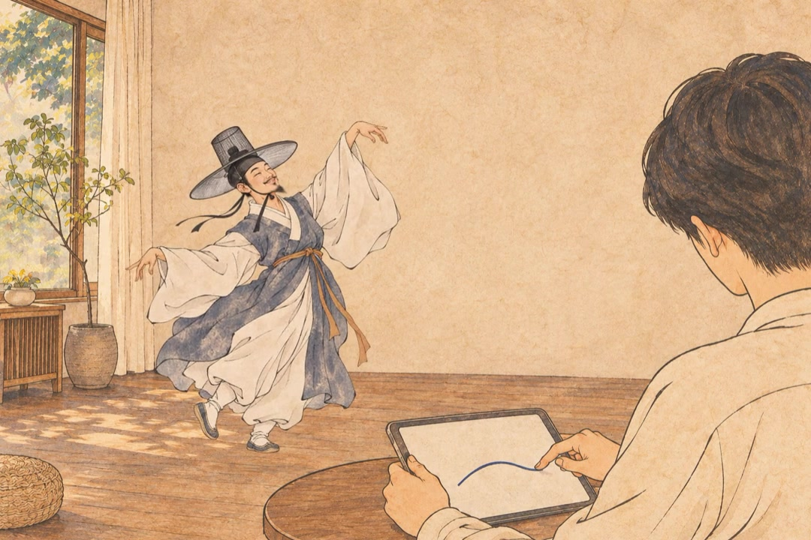
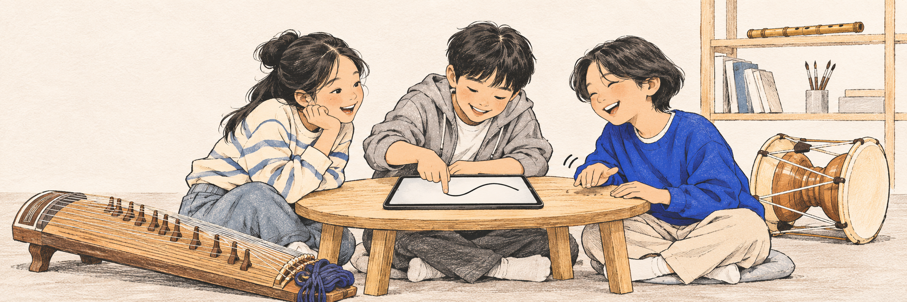

그림으로 연주하는 국악 앱, 붓가락
내 그림은 어떤 소리가 날까?
휴대폰에서도, 태블릿에서도.
먼저 소리만 들어볼까요?
홈페이지에서만 즐기는 소리 놀이
내 가락에, 한바탕.
붓가락에서는 선을 그려 국악을 연주해요.
여기서는 그 소리에 선비의 춤을 더했어요.
상상 속 한바탕 · 웹 체험

선을 따라 움직일 준비가 됐어요.
가야금 · 뜯는 소리
손가락으로 줄을 뜯는 악기예요. 여기서는 선을 그어 연주해보세요.
선을 올려볼까요?높이 그리면 번쩍, 낮게 그리면 꾸벅
높게낮게붓가락 브랜드 영상 · 연출 예시0:00 / 0:12
이번엔 어떤 소리가 끌리나요?
내 취향의 소리 찾기 ↓이름을 몰라도 괜찮아요. 다른 악기도 들어보세요.
선비의 춤은 홈페이지 전용 연출로, 앱에 포함된 기능은 아니에요. 앱에서는 그린 가락을 연주하고, 연주 화면을 영상으로 저장할 수 있어요.
국악과 가까워지는 첫 경험
처음 듣는 국악이,자꾸 듣고 싶은 음악으로.
아이들이 국악을 쉽고 즐겁게 만났으면 했어요.
직접 소리를 만들고, 서로의 가락을 나누면서요.

무슨 소리지?내가 해볼래.한 번 더!소리부터 골라볼까요
내가 좋아할 국악은 어떤 소리일까?
늘 듣던 음악과는 조금 다른 소리.
하나씩 들어보고, 마음에 드는 악기로 그려보세요.
이름보다, 소리를 먼저.
악기 소리 듣기
어떤 소리가 더 궁금하세요?
뜯는 소리, 켜는 소리, 불고 두드리는 소리.
17가지 악기를 눌러 마음에 드는 소리를 찾아보세요.
앱 악기 음원: 국립국악원 「국악기 디지털 음원」 · 공공누리 제1유형
앱에서 할 수 있는 것
한번 더 듣고 싶은 가락이 나왔다면.
무료와 Pro
네 악기로 시작해요.더 궁금해지면 Pro.
가야금·해금·대금·장구는 무료로 연주해요.
Pro에서는 17가지 악기와 더 긴 가락을 만들 수 있어요.
함께 들어 있는 것무료Pro
악기4종17종
음계평조·계면조4종
가락 길이최대 2마디최대 8마디
AI 다듬기하루 3번무제한
음 편집 · 흥얼거리기 · MIDI 가져오기—✓
영상의 붓가락 표시있음없음
무료에서도 예제곡은 끝까지 들을 수 있어요.
자주 묻는 질문
시작하기 전에.
악보를 읽을 줄 몰라도 되나요?
네. 기본 평조 음계는 그린 선이 서로 어울리는 음으로 연주되도록 구성돼 있어요. 높낮이를 바꾸며 먼저 들어보세요.
인터넷 없이 쓸 수 있나요?
그리기·재생·내보내기는 기기 안에서 동작해요. Pro 구매와 복원 때는 스토어 연결이 필요해요.
어떤 기기에서 쓸 수 있나요?
아이폰·아이패드와 안드로이드 폰·태블릿을 지원해요. Pro 구매는 각 스토어에서 별도로 적용돼요.
소리는 어디서 왔나요?
국립국악원 「국악기 디지털 음원」의 실제 악기 녹음을 사용해요. 이 페이지의 미리듣기도 공식 사이트의 악기 소리 클립을 사용합니다.